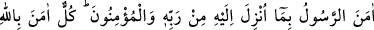
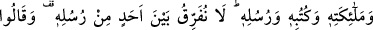
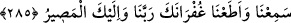

Eğer bir melek şeytanla oturup kalkarsa,
Şeytan ona vahşet, hıyânet ve hîle öğretir.
Kötülerden iyilik öğrenemezsin.
Kurttan da kürkçülüğü bekleyemezsin.
Allah Teâla, kullarının, hesaba çekileceklerini göz önünde bulundurarak sürekli
olarak hareketlerini kontrol etmelerini, gaflete düşmeksizin gerekeni yapmalarını ve
gönüllerine gelen düşüncelere dikkat etmelerini istemektedir. Ancak böylelikle kulluğun
gerektirdiği âdâbı yerine getirebileceklerini ve Allah’ın azâbından kurtulabileceklerini
belirtmektedir.
İnsan, halk âlemi ve emir âlemi olmak üzere iki âlemden mürekkeptir. Emir âleminden
olmak üzere nûrânî bir ruhu, halk âleminden olmak üzere de süflî ve zulmânî bir nefsi
vardır. Rûh ve nefs âid oldukları âlemlere meyil gösterirler. Ruh, âlemlerin Rabbı olan
Allah’a yakın olmayı; nefs ise Hak’tan uzaklaşıp esfel-i sâfiline inmeyi ister.
Allah Teâla nefisleri, içinde bulundukları kötülüklerden temizleyip kurtarmak ve
kendine yaklaştırmak için Hz. Muhammed (a.s.)’i peygamber olarak göndermiştir.
Nefisler ancak ruh aracılığıyla kazanacakları güzel ahlâk sâyesinde temizlenip aydınlığa
kavuşurlar. Bu nokta Allah’ın velî kullarının makamıdır. Allah onları karanlıklardan
nûra çıkarır.
Şeytanı ise şeytana dost, Allah’a düşman olanların rûhlarını rûhânî aydınlıktan nefsânî
karanlıklara sokmak için görevlendirmiştir. Nefsin rûha üstün gelmesi bu neticeyi
doğurur. Neticede bu kimseler cehennemin en alt tabakasına giderler.
Hakikat noktasından âyetin mânâsı şöyledir: Nefsânî vasıfların, zâhirde şerîata
muhâlif, bâtında tabîata uygun olarak gönlünüze bıraktığı düşünceleri açığa vurun veya
tarikat yardımıyla tabiata muhalefet edip şeriata muvafakat etmek suretiyle bu
düşünceleri gizleyin, her iki halde de Allah sizi hesâba çeker. Ya nefsi temizleyerek
onu, rûhun nûrunu ve ahlâkını kabûle uygun hâle getirir veya ruhu kirleterek onu, nefsin
karanlıklarını kabûle mecbûr eder. Allah dilediği kimseyi, nefsini rûhun nûrlarıyla
rûhunu da Hakkın nûrlarıyla aydınlatmak sûretiyle mağrifet eder. Dilediğini de, nefsini
cehennem ateşine atmak, rûhunu da Aliyyü’l-Kebir olan Allah’tan ayrı kalmak ateşiyle
yakmak sûretiyle azâb eder.
Allah, halk ve emir âleminden mürekkep olan insana hem lütfunu hem de kahrını
izhara kadirdir. Necmuddin Dâye (k.s.)’nın Te’vîlât’ında böyle yazılıdır.